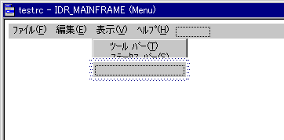
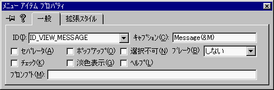
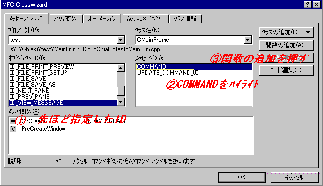
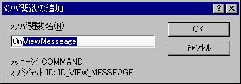
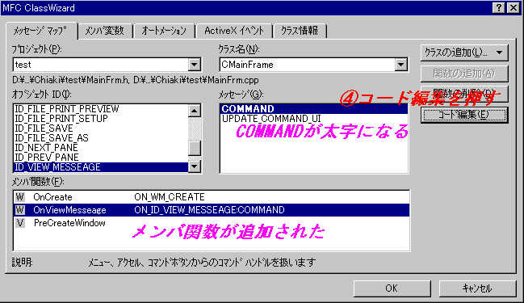
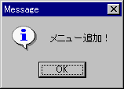

メニューの追加の方法
意外にこの質問が多いので、（この質問だけで結構なメールがやってきます）UPしてしまうことにしました。メニュー追加は、順序を追って行えば大丈夫だと思います。CALSSWIZARDの基本的使い方とも言えるので是非マスターしておきたいところです。
リソースを編集してIDとキャプションを決定する
1.リソースビューでメニューリソースを開く
2.メニューを追加したい場所で右クリック → プロパティ

3.プロパティダイアログのIDとキャプションを以下のように
(別に違う名前でもOKですよ)
決定する。
ID
::ID_VIEW_MESSAGE
キャプション
::Message(&M)

4.プロパティダイアログを閉じる
(閉じても設定は残っているのでご安心を)
IDと関数をバインド(結び付け)する
5.先ほど作ったメニュー「Message」を右クリックしCLASSWIZARDを実行する。
6.以下の図の通りのことを行う。
ID_VIEW_MESSAGEをハイライト
commandをハイライト
「関数の追加」を押す

関数の追加を押すと下のダイアログが表示されます(以下はVC++6.0の場合の図)。
関数名はディフォルトのままで結構です。

7.するとCLASSWIZARDの画面は以下のようになるのでチェックしてください。
(MESSAGEのスペルがMESSEAGEとなっていますが、MESSAGEが正しいです)

コードを編集して実行する
8.コード編集ボタンを押します
9.以下のコードを記述します。
コードは自由ですが、今回は分かりやすいようにMessageBox関数を実行してWindowを表示する事にしました
void
CMainFrame::OnViewMessage()
{
MessageBox("メニュー追加！","Message",MB_ICONINFORMATION );
}
ビルドして実行すると以下のようになるでしょう

Back to Index